Lange Sitzzeiten
Lange Phasen mit wenig Bewegung können Beschwerden begünstigen oder aufrechterhalten.
EVIDENZBASIERTER RATGEBER
Verständliche Informationen, praktische Übungen und alltagstaugliche Strategien für Menschen mit Nackenbeschwerden.

Nackenschmerzen gehören zu den häufigsten Beschwerden unserer Zeit.
Du bist damit nicht allein. Nackenbeschwerden können durch das Zusammenspiel verschiedener Faktoren beeinflusst werden.
Dieser 14-Tage-Aktivplan zeigt dir Schritt für Schritt Möglichkeiten, mehr Bewegung und bewusste Entlastung in deinen Alltag zu integrieren.
Dieser Leitfaden führt dich Schritt für Schritt zu mehr Beweglichkeit, weniger Beschwerden und einem aktiveren Alltag.
Nackenschmerzen entstehen häufig nicht durch einen einzigen Faktor. Alltag, Bewegung, Belastung, Stress und Gewohnheiten können zusammenspielen.
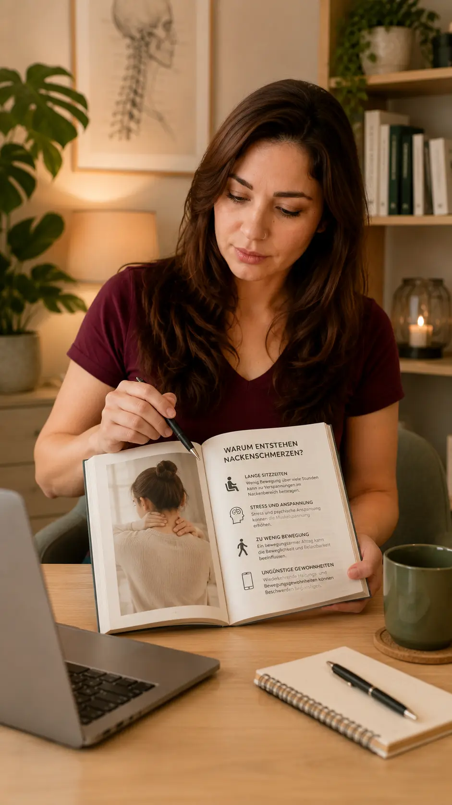
Lange Phasen mit wenig Bewegung können Beschwerden begünstigen oder aufrechterhalten.
Stress kann die Wahrnehmung von Beschwerden beeinflussen und mit erhöhter Muskelanspannung einhergehen.
Ein bewegungsarmer Alltag kann Beweglichkeit und körperliche Belastbarkeit beeinflussen.
Wiederkehrende Bewegungs- und Haltungsgewohnheiten können Beschwerden begünstigen.
Die Halswirbelsäule (HWS) besteht aus sieben Wirbeln C1–C7. Sie trägt den Kopf, schützt wichtige Strukturen und ermöglicht Bewegungen wie Nicken, Drehen und Seitneigen.
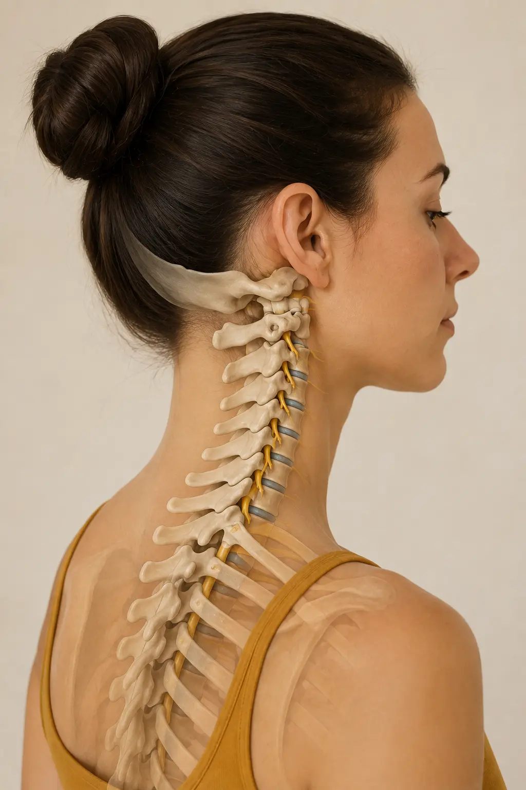
Die Halswirbelsäule trägt den Kopf, der bei einem Erwachsenen ungefähr 5–7 kg wiegen kann.
Wird der Kopf über längere Zeit nach vorne geneigt, steigt die Belastung für die Strukturen im Nacken. Muskeln müssen dabei häufig dauerhaft arbeiten.
Die sieben Halswirbel ermöglichen einen großen Bewegungsumfang und arbeiten dabei gemeinsam mit Muskeln, Bandscheiben, Gelenken und Nervenstrukturen.
Langes Sitzen, Arbeiten am Bildschirm oder der häufige Blick nach unten auf Smartphone und Tablet können dazu führen, dass der Kopf über längere Zeit in einer nach vorne geneigten Position bleibt.
Dadurch können die Muskeln im Nacken und Schulterbereich stärker und länger beansprucht werden. Bei manchen Menschen kann dies mit Muskelverspannungen und Nackenschmerzen einhergehen.
Kleine Bewegungspausen über den Tag verteilt können helfen, eine lange statische Haltung zu unterbrechen. Richte dich mehrmals am Tag bewusst auf, bewege Kopf und Schultern und gib deinem Körper die Möglichkeit, aus einer einseitigen Schonhaltung herauszukommen.
Nackenschmerzen haben selten nur eine einzige Ursache. Häufig kommen mehrere Einflussfaktoren zusammen.
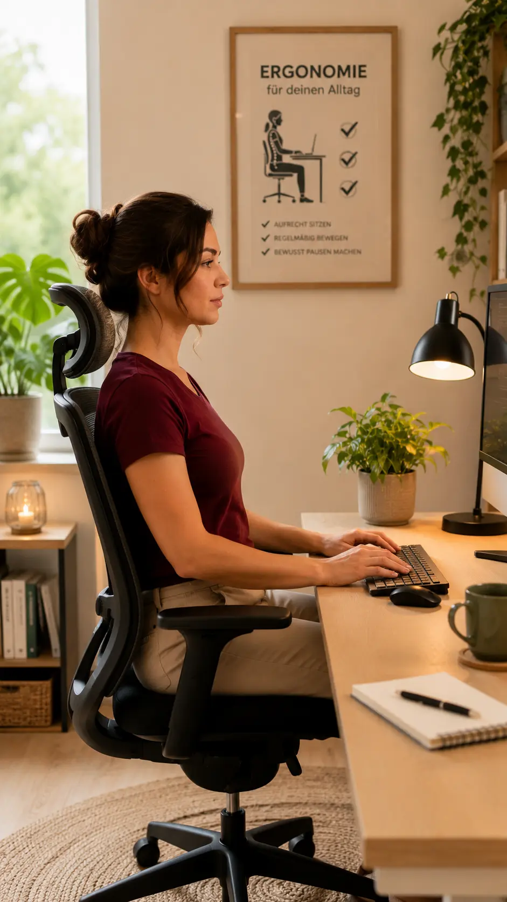
Viele Stunden in derselben Position können den Bewegungsumfang im Alltag reduzieren.
Ein ungünstig positionierter Bildschirm kann wiederholte Kopfpositionen beeinflussen.
Psychische Belastung kann die Wahrnehmung von Beschwerden beeinflussen.
Regelmäßige Bewegung unterstützt Beweglichkeit und Belastbarkeit.
Schlafqualität und Erholung können das persönliche Beschwerdeempfinden beeinflussen.
Handy, Taschen, Autofahrten und andere Gewohnheiten können ebenfalls eine Rolle spielen.
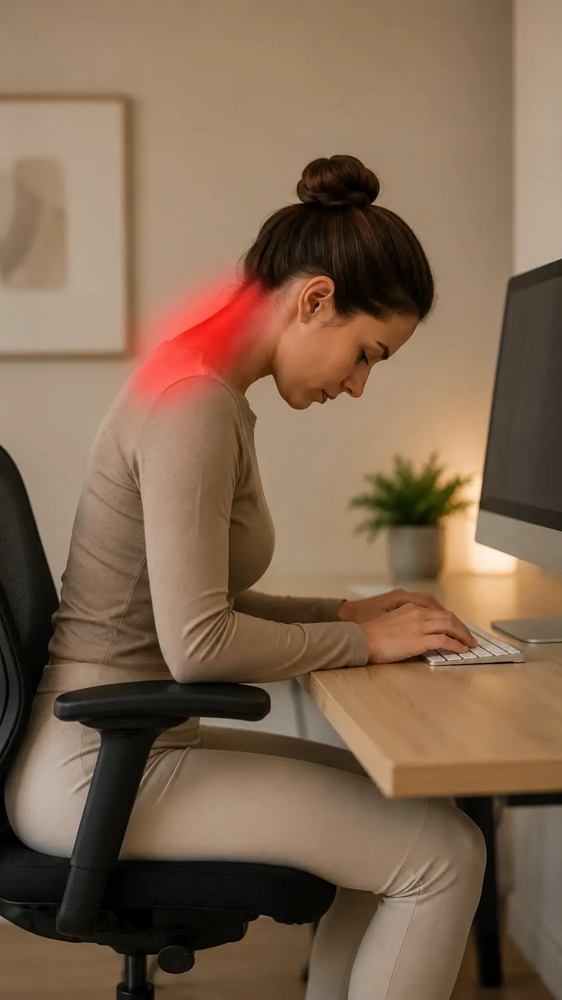
Ein dauerhaft nach vorne orientierter Kopf kann den Nacken stärker beanspruchen.
Eine angespannte Schulterhaltung kann sich unangenehm anfühlen.
Eine unpassende Sitzhöhe kann die gesamte Arbeitsposition beeinflussen.
Regelmäßige Positionswechsel bringen Bewegung in den Arbeitstag.
Diese Position führt zu einer einseitigen Kopf- und Schulterhaltung.
Wiederholte einseitige Belastungen können unangenehm werden.
Richtig sitzen bedeutet nicht, stundenlang unbeweglich zu bleiben. Ein guter Arbeitsplatz unterstützt häufige Positionswechsel.
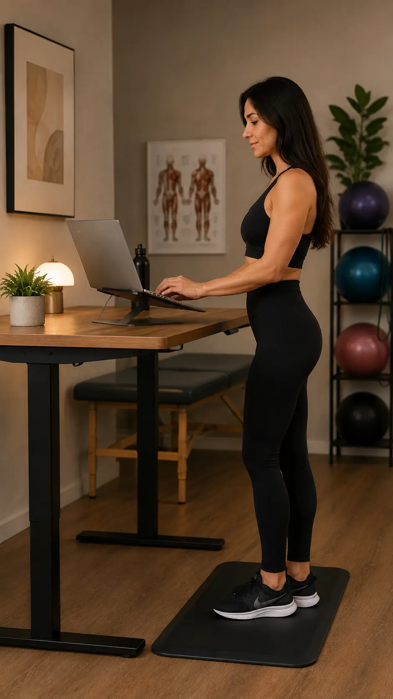
Der 14-Tage-Plan soll dir Orientierung geben. Passe Umfang und Intensität an dein persönliches Empfinden an.
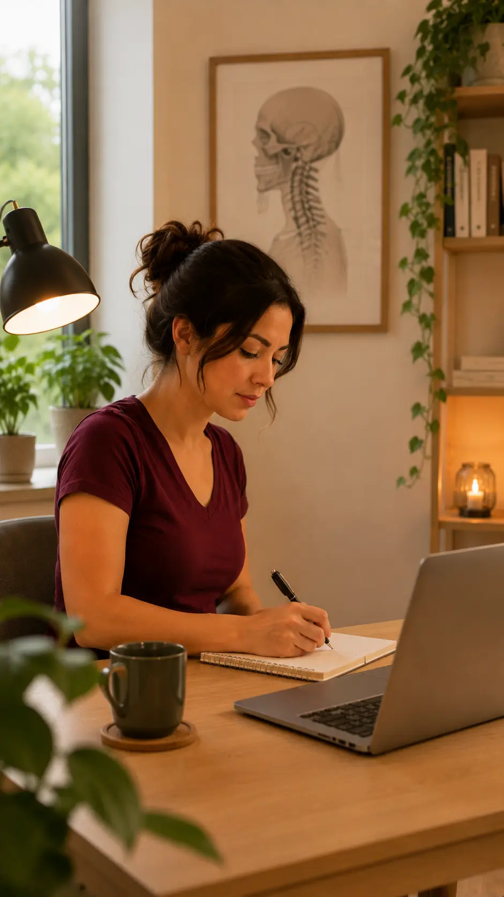
Plane einige Minuten für Bewegung und Pausen ein.
Beginne kontrolliert und ohne unnötigen Schwung.
Achte darauf, wie dein Körper auf die Bewegung reagiert.
Kleine, regelmäßige Schritte sind oft leichter umzusetzen.
Eine kleine, kontrollierte Bewegung für eine bewusstere Kopf- und Nackenposition.
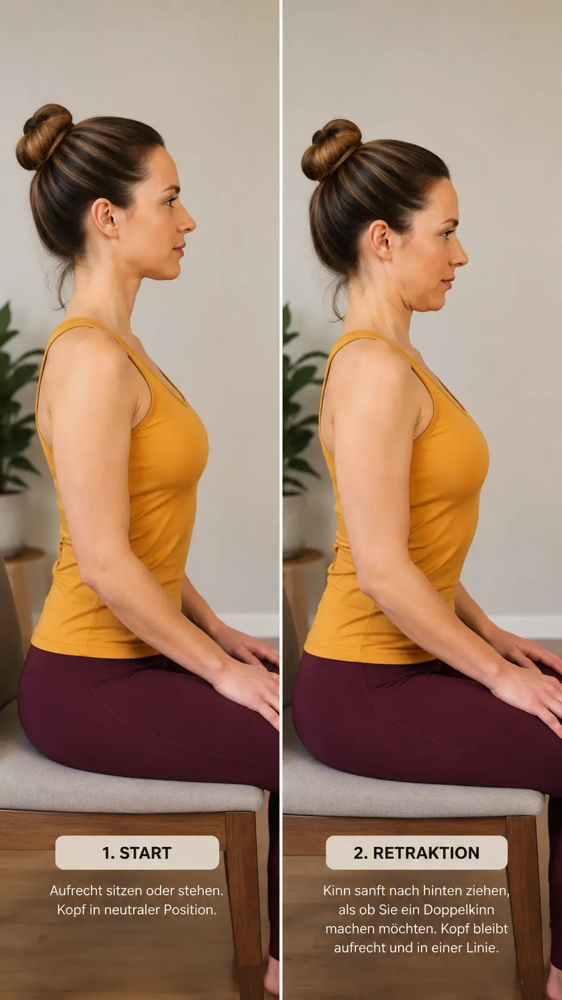

Ein kleiner Bewegungsimpuls kann helfen, eine dauerhaft nach vorne gerichtete Kopfhaltung zu unterbrechen.
Die Bewegung klein, langsam und angenehm ausführen. Nicht mit Kraft nach hinten drücken.
Bewusste Schulterbewegungen bringen Abwechslung in einen langen Sitzalltag. Regelmäßige, sanfte Bewegungen fördern die Durchblutung und unterstützen dadurch die Versorgung der Muskulatur mit Sauerstoff und Nährstoffen. Eine gesunde Muskulatur braucht regelmäßige Bewegung, um ihre Funktion und Beweglichkeit im Alltag zu erhalten.
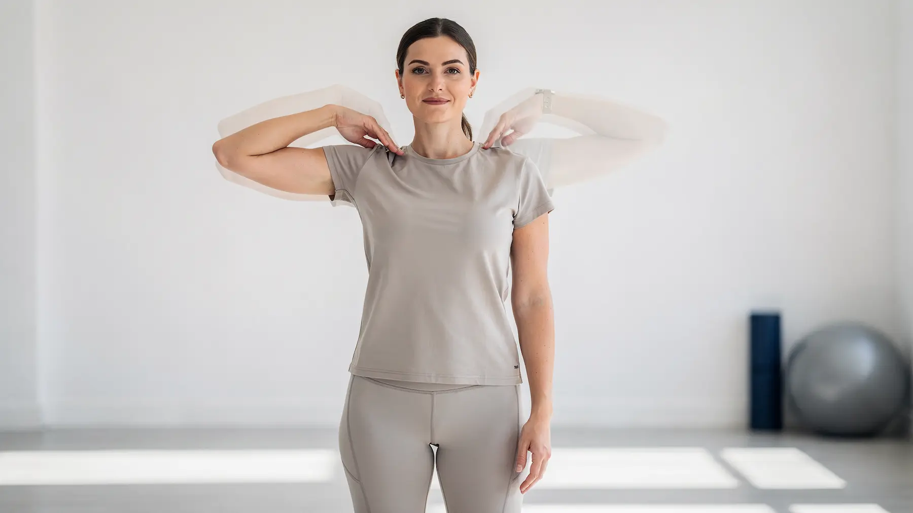
Eine sanfte Bewegung für den seitlichen Nackenbereich. Führe die Bewegung langsam hin und zurück aus. Am besten kombinierst du sie mit einer ruhigen, tiefen Ein- und Ausatmung.
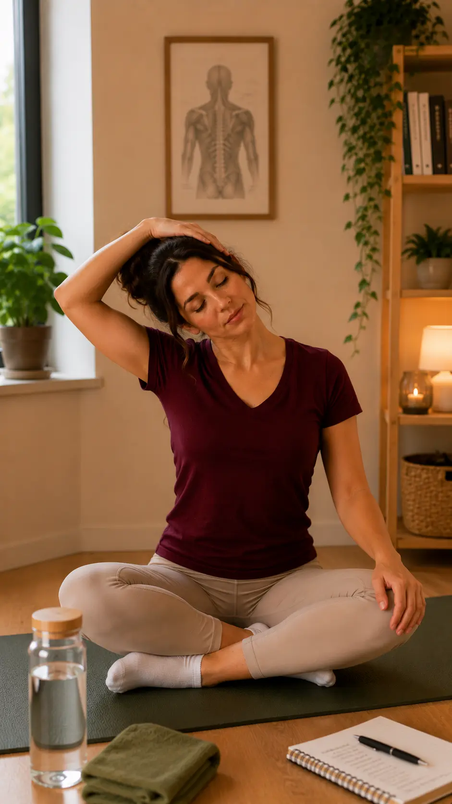
Eine geöffnete Brustposition kann eine sinnvolle Ergänzung zu einem sitzenden Alltag sein.
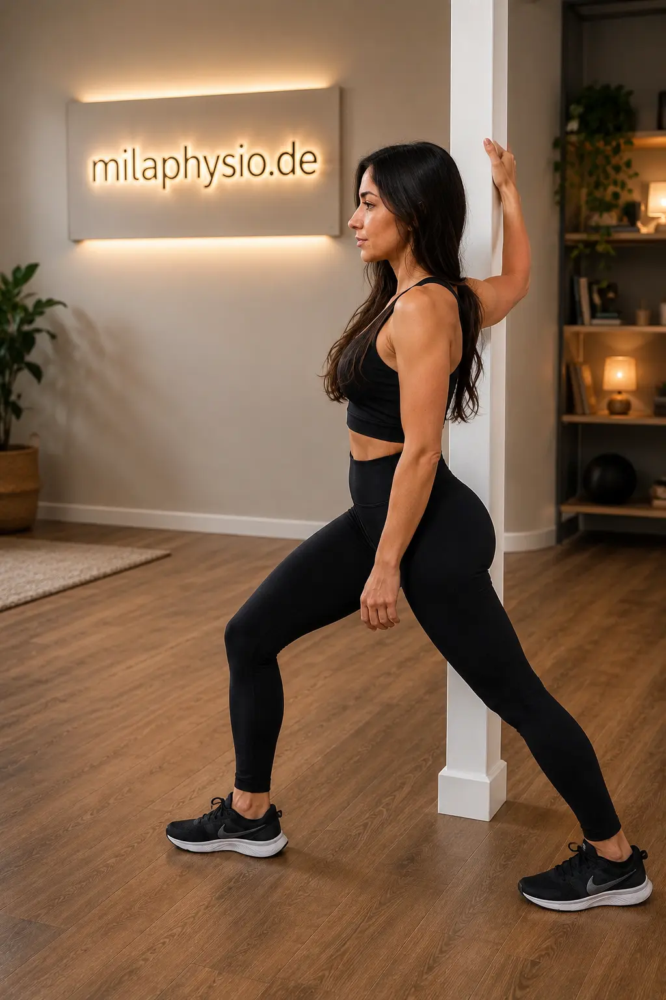
Kontrollierte Schulterblattbewegungen unterstützen eine bewusste Haltung und Bewegung.
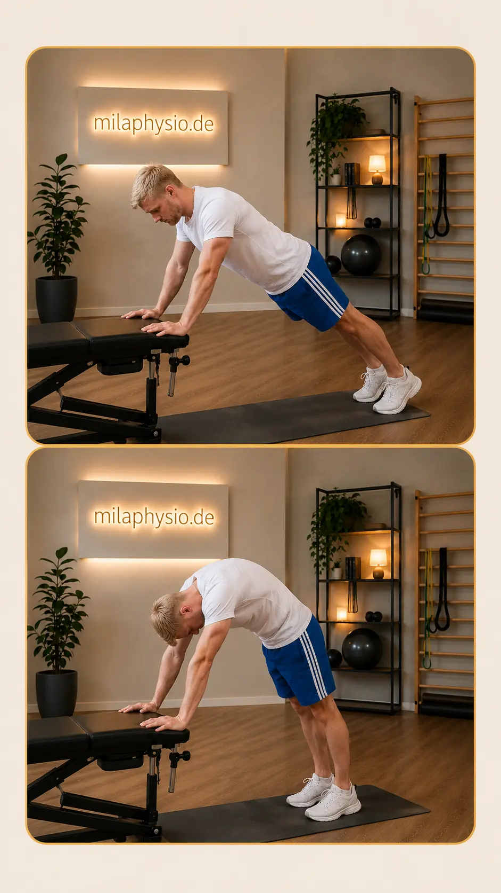
Eine sanfte Bewegungsübung im Vierfüßlerstand, bei der du deine Wirbelsäule kontrolliert zwischen Beugung und Streckung bewegst.
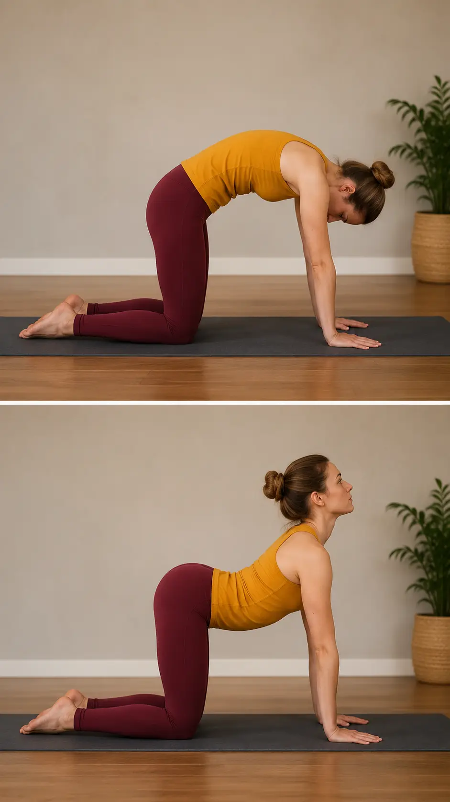
Die Übung führt die Wirbelsäule kontrolliert durch Beugung und Streckung und kann ihre Beweglichkeit unterstützen.
Du lernst, die Bewegung deiner Wirbelsäule bewusster wahrzunehmen und kontrolliert auszuführen.
Die Bewegung eignet sich als kurze aktive Pause, besonders nach längeren Sitzzeiten.
Das langsame Wechseln zwischen Katze und Kuh verbindet Bewegung mit einer ruhigen Atmung.
Die Bewegung sollte kontrolliert und in einem angenehmen Bewegungsbereich durchgeführt werden. Bei deutlicher Beschwerdezunahme die Übung pausieren und gegebenenfalls fachlich abklären lassen.
Plane jeden Tag einige Minuten für Bewegung, Übungen und bewusste Pausen ein.
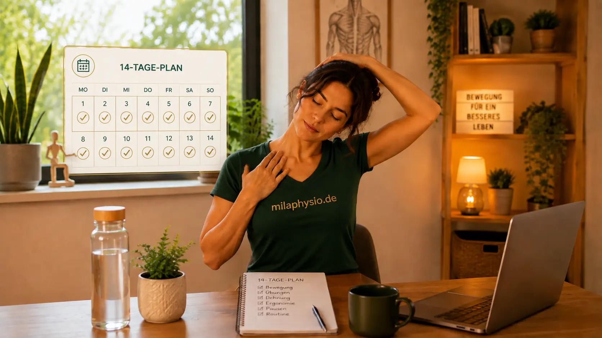
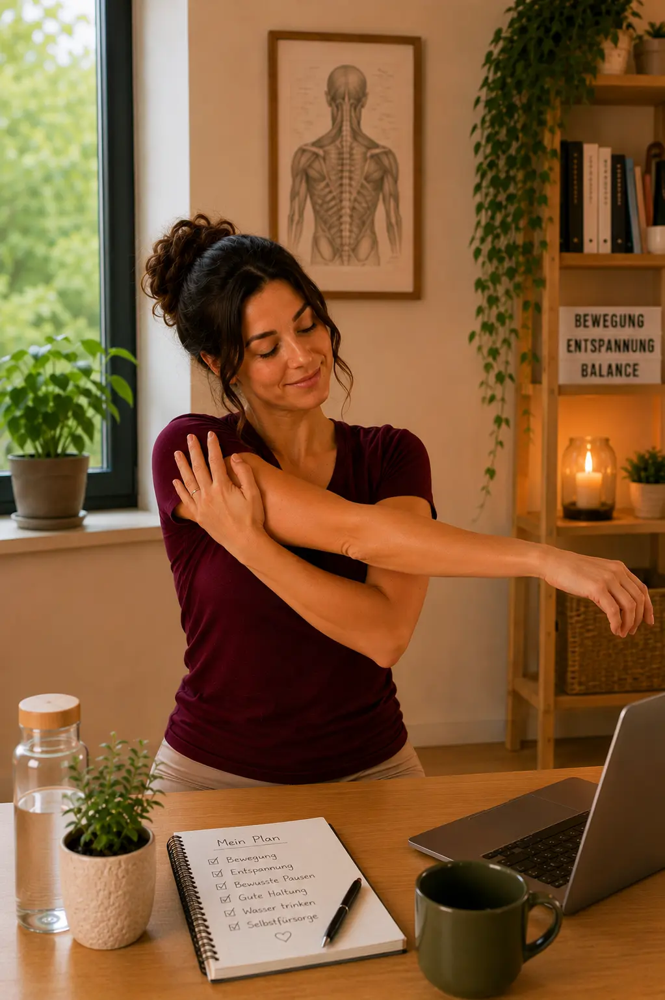
Kleine Anpassungen können den Arbeitsplatz angenehmer und abwechslungsreicher machen.
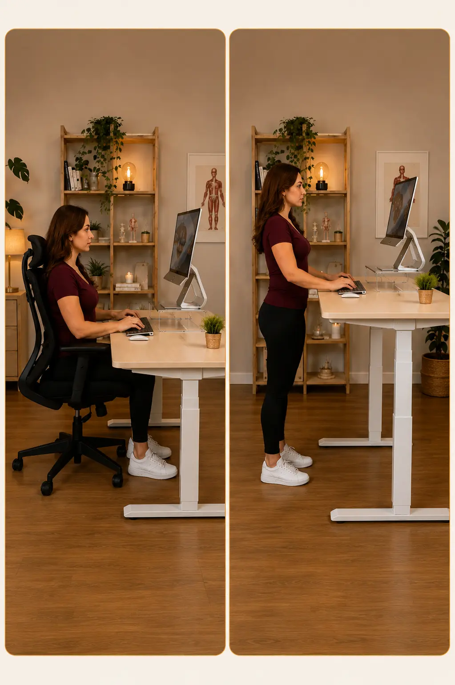
Die Oberkante des Bildschirms sollte etwa auf Augenhöhe oder leicht darunter liegen.
Ein Abstand von ungefähr 50–60 cm zum Bildschirm kann eine angenehme Sicht ermöglichen.
Tastatur und Maus sollten so positioniert sein, dass Schultern und Hände entspannt bleiben.
Ellenbogen und Knie dürfen ungefähr im rechten Winkel stehen. Die Füße haben festen Bodenkontakt.
Sitzen und Stehen regelmäßig abwechseln und zwischendurch kurz bewegen.
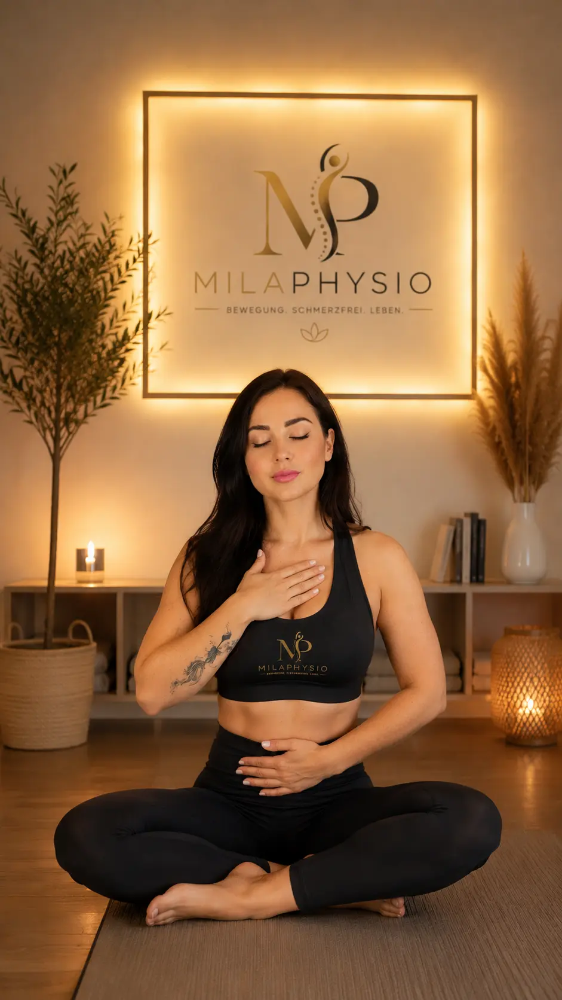
Ruhiges, bewusstes Atmen kann eine kurze Pause im Alltag schaffen, die Körperwahrnehmung unterstützen und zur Entspannung beitragen.
Die Atmung wird bewusst ruhig und tief geführt, während sich der Bauch sanft hebt und senkt.
Die Bewegung findet überwiegend im Brustkorb statt und kann bei Stress eher flach und oberflächlich werden.
Bauch- und Brustatmung verbinden sich zu einer bewussten und gleichmäßigen Atmung.
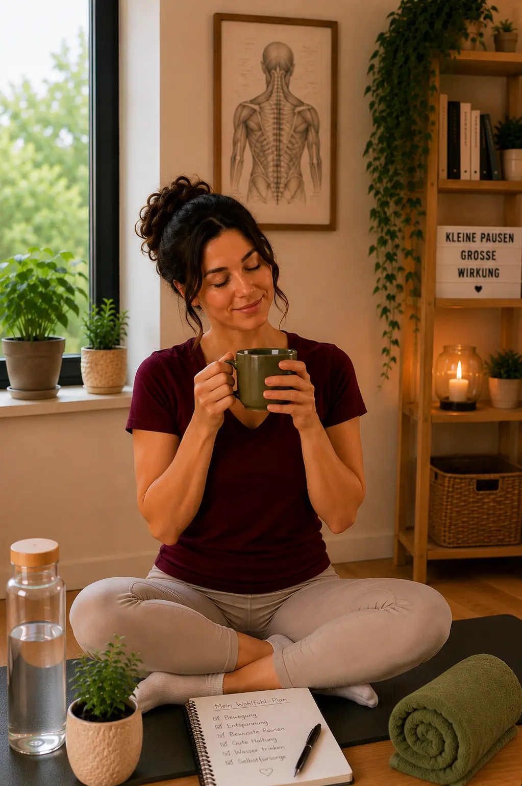
Stress kann körperliche Anspannung und die Wahrnehmung von Beschwerden beeinflussen. Kleine Pausen können helfen, den Arbeitstag bewusst zu unterbrechen.
Kurze Unterbrechungen einplanen.
Ruhig und bewusst atmen.
Position wechseln.
Arbeitsende bewusst gestalten.
Deine Gesundheit steht an erster Stelle. Neue, starke oder ungewöhnliche Beschwerden sollten nicht allein mit einem Selbsthilfeprogramm behandelt werden.
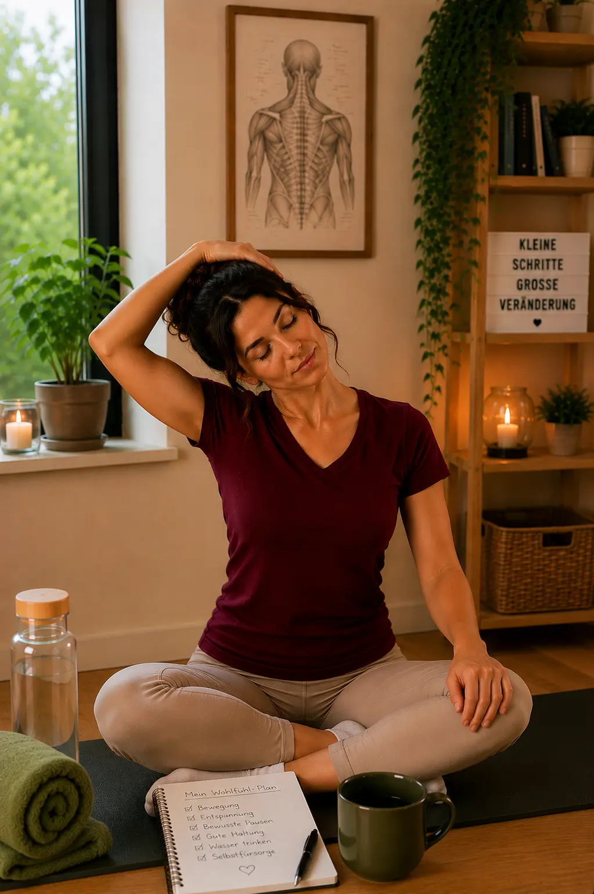
Eine einzelne ideale Haltung ist nicht das Ziel. Abwechslung und Bewegung im Alltag sind wichtiger.
Bei vielen unspezifischen Beschwerden kann angemessene Bewegung sinnvoll sein. Bei Warnzeichen gilt jedoch: abklären lassen.
Wähle Übungen und Belastungen so, dass sie zu deinem aktuellen Zustand passen.
Die empfohlenen Dosierungen stehen jeweils bei der Übung. Regelmäßigkeit ist wichtiger als möglichst viel auf einmal.
Bewegung reduzieren oder abbrechen. Bei deutlicher Beschwerdezunahme oder ungewöhnlichen Symptomen fachlich abklären lassen.
Viele Übungen lassen sich in kurzer Form in den Arbeitsalltag integrieren.
Ausreichendes Trinken und guter Schlaf gehören zu einem insgesamt gesundheitsförderlichen Alltag. Sie ersetzen jedoch keine individuelle Abklärung.
Ja, sofern die Übungen gut vertragen werden. Bei neuen oder zunehmenden Beschwerden sollte die Situation erneut beurteilt werden.
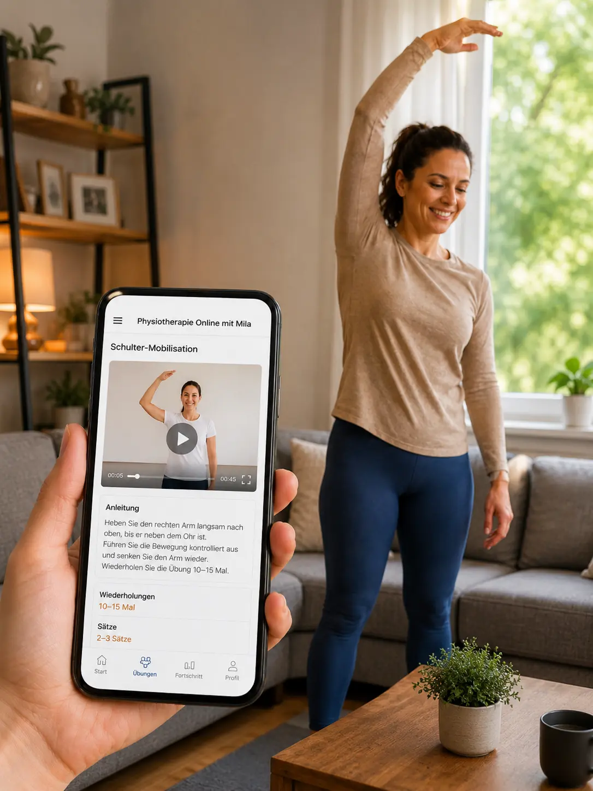
Wähle eine Veränderung, die realistisch in deinen Alltag passt.
Verknüpfe Übungen mit einer bestehenden Routine.
Nutze Kalender, Handy oder Notizzettel.
Beobachte, was dir im Alltag gut tut.
14 Tage für einen bewegteren Alltag.
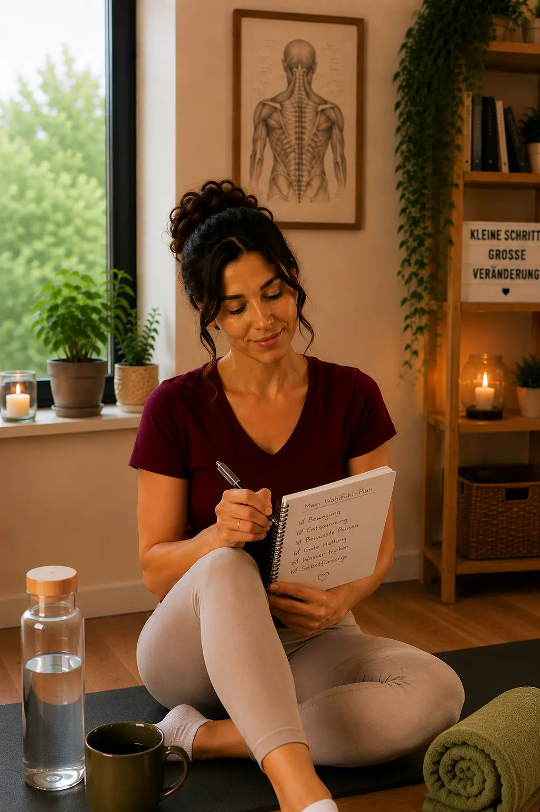
Beobachte deinen Nacken über 14 Tage. Eine kurze tägliche Notiz kann dir helfen, Veränderungen und hilfreiche Gewohnheiten besser wahrzunehmen.
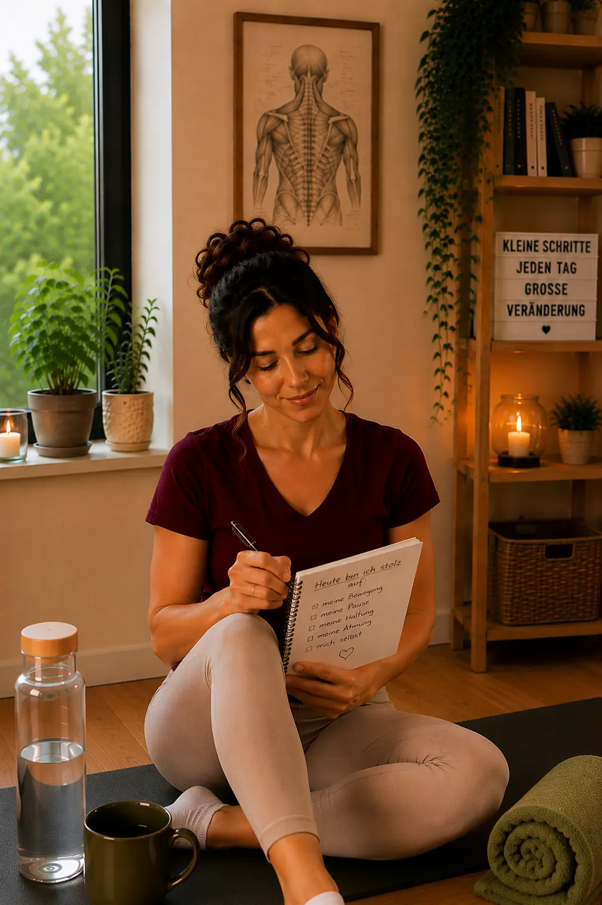
| Tag |
Schmerz 0–10 |
Übungen | Was hat gutgetan? |
|---|---|---|---|
| 1 | ______ | ☐ | __________________ |
| 2 | ______ | ☐ | __________________ |
| 3 | ______ | ☐ | __________________ |
| 4 | ______ | ☐ | __________________ |
| 5 | ______ | ☐ | __________________ |
| 6 | ______ | ☐ | __________________ |
| 7 | ______ | ☐ | __________________ |
| 8 | ______ | ☐ | __________________ |
| 9 | ______ | ☐ | __________________ |
| 10 | ______ | ☐ | __________________ |
| 11 | ______ | ☐ | __________________ |
| 12 | ______ | ☐ | __________________ |
| 13 | ______ | ☐ | __________________ |
| 14 | ______ | ☐ | __________________ |
Anna arbeitet viel am Schreibtisch. Nach einigen Wochen mit häufigem Sitzen bemerkte sie, dass ihr Nacken gegen Ende des Arbeitstages immer wieder angespannt war.
Statt ihren gesamten Alltag umzustellen, begann sie mit kleinen Veränderungen: Sie wechselte häufiger zwischen Sitzen und Stehen, machte kurze Bewegungspausen und nahm sich zwischendurch bewusst Zeit für ruhige Atemzüge und einfache Übungen.
Nach und nach wurde ihr bewusster, welche Situationen ihrem Nacken guttaten und wann sie eine Pause brauchte. Die wichtigste Erkenntnis für sie: Regelmäßigkeit war wichtiger als Perfektion.
Was könnte dein erster kleiner Schritt sein?
Du musst nicht alles auf einmal verändern.
Beispielhafte Geschichte zur Veranschaulichung. Individuelle Erfahrungen können unterschiedlich sein.
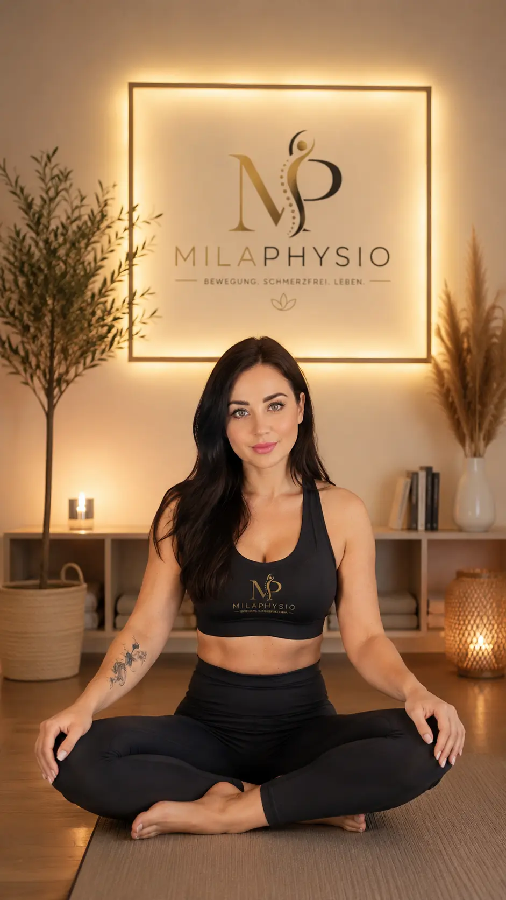
Ich bin staatlich anerkannte Physiotherapeutin und beschäftige mich besonders mit Beschwerden rund um Bewegung und den Bewegungsapparat.
Verständliche Informationen, realistische Schritte und Bewegung, die in den Alltag passt.
Mein Ziel ist es, Menschen dabei zu unterstützen, ihren Körper besser zu verstehen und Bewegung bewusster in ihren Alltag zu integrieren.
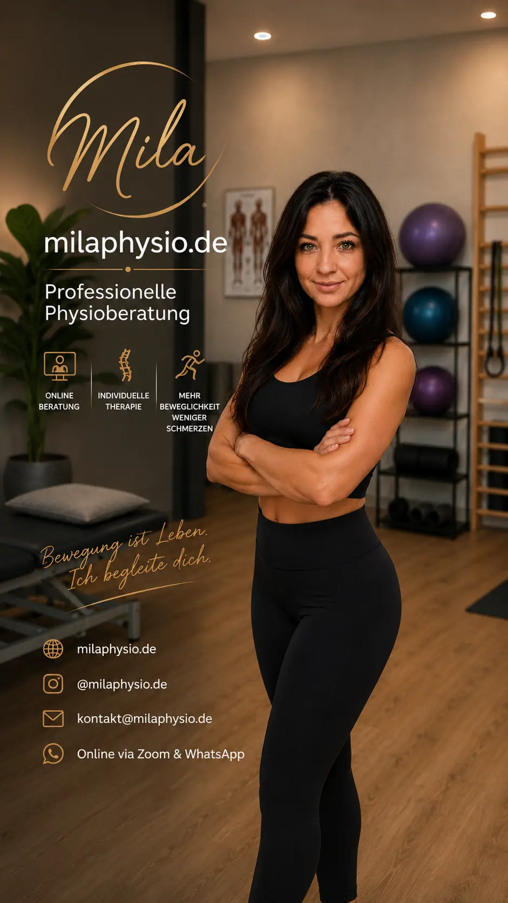
Du hast Fragen zum Ratgeber, zu den Übungen
oder möchtest mehr über meine physiotherapeutische
Begleitung erfahren?
Ich freue mich auf deine Nachricht.
Informationen, die du im Alltag nutzen kannst.
Persönliche Situationen brauchen persönliche Betrachtung.
Schritt für Schritt mehr Bewegung im Alltag.

Du hast den ersten Schritt gemacht – indem du dich informiert hast.
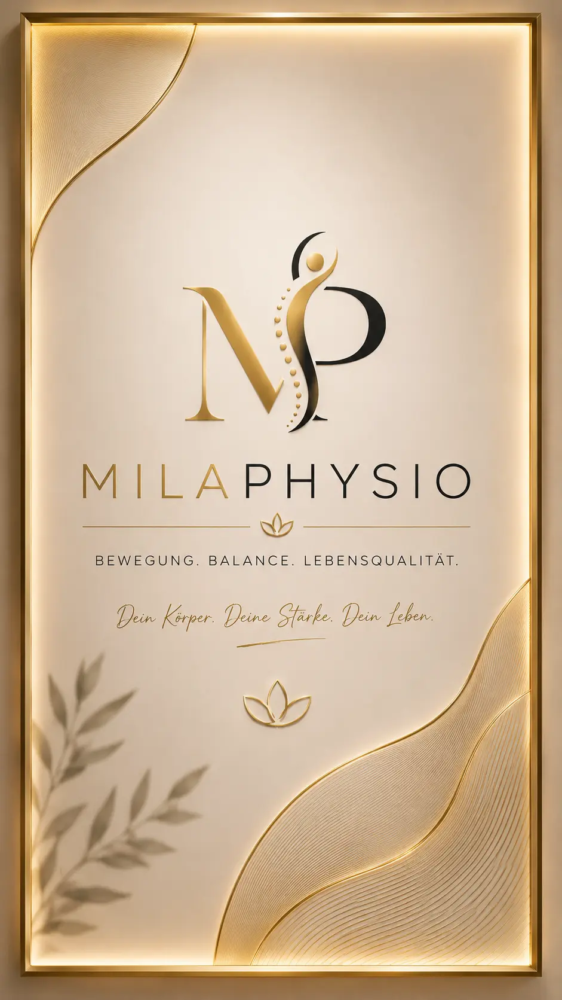
Jetzt kannst du entscheiden, welche kleine Veränderung du in deinen Alltag mitnehmen möchtest.
Scanne den QR-Code und entdecke die Möglichkeiten bei MILAPHYSIO.
Ich freue mich darauf, dich auf deinem Weg zu mehr Bewegung und Lebensqualität zu begleiten.
Bis bald – Mila